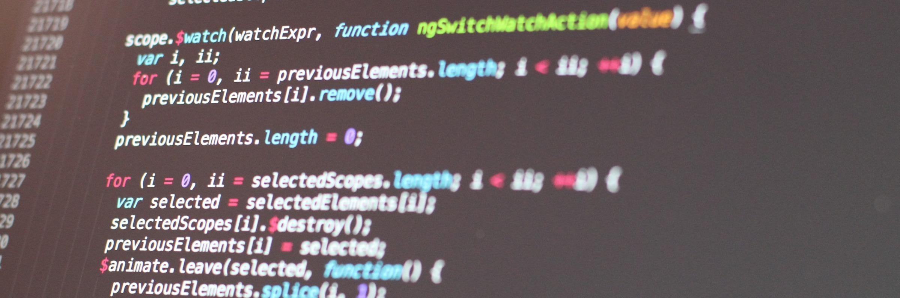

La Programmation
La programmation, appelée aussi codage dans le domaine informatique, désigne l'ensemble des activités qui permettent l'écriture des programmes informatiques. C'est une étape importante du développement de logiciels (voire de matériel).
L'écriture d'un programme se fait dans un langage de programmation. Un logiciel est un ensemble de
programmes (qui peuvent être écrits dans des langages de programmation différents) destiné à la
réalisation de certaines tâches par un (ou plusieurs) utilisateurs du logiciel.
La programmation représente donc ici la rédaction du code source d'un logiciel. On utilise plutôt le
terme développement pour dénoter l'ensemble des activités liées à la création d'un logiciel et des
programmes qui le composent. Cela inclut la spécification du logiciel, sa conception, puis son
implémentation proprement dite au sens de l'écriture des programmes dans un langage de programmation
bien défini, ainsi que la vérification de sa correction, etc.
La première machine programmable (c’est-à-dire machine dont les possibilités changent quand on modifie
son programme) est probablement le métier à tisser de Jacquard, qui a été réalisé en 1801. La machine
utilisait une suite de cartons perforés. Les trous indiquaient le motif que le métier suivait pour
réaliser un tissage ; avec des cartes différentes le métier produisait des tissages différents. Cette
innovation a été ensuite améliorée par Herman Hollerith d'IBM pour le développement de la fameuse carte
perforée d'IBM.